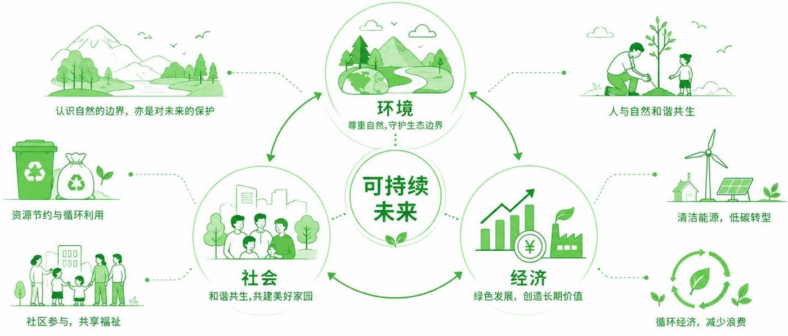

可重复包装系统
Loop
TerraCycle / Loop 把包装从一次性消费品重新设计为可归还资产。消费者购买商品后归还容器，系统负责收集、清洗、再灌装和再次投放。
运行机制
押金或账户机制降低容器流失；品牌、零售、清洗和物流共同承担循环责任。
教材对应
可持续发展、绿色设计与系统性设计。可持续设计不只是材料替换，而是消费链条的重新组织。
如果归还率低、清洗距离远，这个系统还可持续吗？


Sustainable Design
可持续设计源于可持续发展理念，是设计界对经济发展与环境、社会等要素之间关系的理论反思，并在此基础上不断寻求变革与转型的设计实践。
它的理念演进，是从相对孤立的、以物为中心的视角，逐渐向更加系统的、以人为中心的视角转变。
地球自然资源已被人类消耗的比例（《千年生态系统评估报告》，2005）
地球陆地表面已被开垦为耕地的比例
北极圈内多年冰面积在 35 年间的减少幅度
按当前速度消耗资源，2050 年所需的资源总量
01 / 本质思考
它与“绿色设计”“生态设计”以及“社会设计”等概念密切相关，同时又有着自身的特征与系统性。切换下方视角，观察同一个设计任务如何被重新定义。
传统产品设计视角
可持续设计视角

可持续性与设计从词汇上的联姻，始于 20 世纪 90 年代中期。它继承了绿色设计与生态设计的基本理念与方法，但不仅强调保护生态环境，而是提倡兼顾环境效益、社会效益、使用者需求与企业发展的系统创新策略。
02 / 一次性外卖包装
外卖包装让消费更便利，但也把大量一次性塑料、纸、餐具和配送袋推入城市废弃物流。问题还在平台效率、用户习惯、清洗回收成本和城市管理。


动手试试：勾选你愿意纳入计算的系统环节，看看“哪个方案更环保”这个结论会不会翻转。可持续设计需要比较系统总消耗，而不是只比较单个包装是否“环保”。

03 / 关键参与者与流动关系
可持续设计不再把产品看作终点，而是把用户、材料、服务与回收视作一个持续流动的系统。点击任一环节，查看它承担的设计责任。
环节 01
04 / 案例研究
它们的共同点是：设计的对象不是造型，而是消费链条的重新组织。展开细节后，对每个案例的课堂追问投出你的判断。
可重复包装系统
TerraCycle / Loop 把包装从一次性消费品重新设计为可归还资产。消费者购买商品后归还容器，系统负责收集、清洗、再灌装和再次投放。
运行机制
押金或账户机制降低容器流失；品牌、零售、清洗和物流共同承担循环责任。
教材对应
可持续发展、绿色设计与系统性设计。可持续设计不只是材料替换，而是消费链条的重新组织。
如果归还率低、清洗距离远，这个系统还可持续吗？

剩食平台
平台把商家临近售罄或过剩的食品打包为 Surprise Bags，用户低价购买并到店取走，让原本可能被丢弃的食品重新进入消费。
运行机制
设计重点不是产品造型，而是信息匹配、时间窗口、价格激励和到店行为。剩食浪费在“卖不出去的最后一小时”被重新设计。
教材对应
社会创新设计与可持续消费。
它解决了食物浪费，还是把库存不确定性转移给了消费者？

可维修硬件
Fairphone 将维修、替换零件、长期支持和供应链伦理作为手机产品价值的一部分，挑战电子产品频繁换新的默认逻辑。
运行机制
模块化结构让电池、屏幕、摄像头等高故障部件可替换；通过零件销售和维修教程降低用户修理门槛。
教材对应
产品设计对资源消耗、社会公平和消费观念的影响。
当可维修性提高成本和厚度时，用户是否愿意为可持续价值买单？
05 / 设计的觉醒
从历史上看，设计始终是连通生产、流通与消费之间的重要桥梁。但长期以来，服务于产业的设计一直充当着“手段”的角色，始终是企业赢利的工具。

19 世纪下半叶
工业革命以后，取而代之的是大批量生产、略显冷漠粗糙但可惠及普罗大众的工业化产品。
约翰·拉斯金和威廉·莫里斯发起了著名的工艺美术运动，力图让设计更富有艺术感，并努力复兴面临失传的手工艺传统。同时他们还肩负一项使命，就是通过更有创造力的工作，恢复工人“劳动的喜悦”。
20 世纪初
“包豪斯”在充分肯定和接受了工业化运动的前提下，融合技术与艺术，将设计回归到以“人本”为出发点的“功能主义”内涵。
它为现代的设计学科与设计行业奠定了基础——这是设计第一次系统性地把“人”而非“物”放在方法论的中心。

20 世纪 20 年代起
美国进入经济高速发展阶段，“商业设计”随之走向历史舞台，并助力资本，共同缔造了遍及全球的“消费主义”浪潮。
设计在遵循“资本逻辑”的前提下，不断挖掘人的潜在欲望，推出花样翻新的商品，在无孔不入的营销之下，来维系“消费社会”的运转和繁荣。
商业设计的积极贡献不容忽视。然而设计师的职责似乎只限于创造外观炫目、具有吸引力的产品，以促进销售来帮助企业获取利润，而对于环境与社会问题视而不见。

1948 年起
设计一直是刺激人们潜在欲望，塑造不可持续的幸福观、消费观和生活方式的直接操纵者，因此被指责为助长消费主义、加剧资源消耗与垃圾产出的罪魁祸首之一。
美国 MOMA 博物馆的埃德加·考夫曼在 1948 年就激烈批评当时的设计行业，是把教科书中的“形式追随功能”篡改为“风格追随销量”。
加州大学的内森·谢卓夫教授在《设计反思：可持续设计策略与实践》中提出，本应该以解决问题为其职能的“设计”，现如今反而成为制造问题或麻烦的一分子。

1970 · 可持续设计的先驱
在美国经济高速发展、工业界与设计界都对未来充满信心的 60 年代末到 70 年代初，帕帕奈克却不合时宜地提出了“设计伦理”的概念，对消费主义泛滥、城市能耗与污染大幅上升进行了毫不妥协的批判。
他鼓励对社会问题、第三世界、底层人民投入关注，同时将环境与自然资源的保护纳入设计师的职责范畴当中，提出了工业设计应该自我限制的观念。
他终其一生倡导的“有限资源论”，为后来掀起的“绿色设计运动”提供了理论基础。

06 / 人与自然的互动
地球是人类赖以生存的唯一家园。在漫长的进化史中，人类从自然的束缚中慢慢解脱出来，并一步步开始了改变世界、统治世界的征程。

约 20 万年前
在生态系统中，人类因为存在着大量天敌，也不居于食物链顶端，并非是天然的统治者。但人类通过群居与合作发展出独特的社群，并以集体学习的形式发展出文化——人类通过文化，而非单纯的自然进化，更快更好地适应了环境。
由于能够使用工具和火，并以群体形式生活，人类从一开始就显示出对环境的巨大影响力。据估计，北美原有 47 属各类大型哺乳动物，在人类到达之后的两千年内消失了 34 属。

农业文明
两河流域：农业生产率达到高峰之后产量却不断下降，公元前 2000 年出现了“土地变白”的报告，显示过度耕种带来的盐碱化后果。到公元前 1800 年，粮食产量只有早期的 1/3，苏美尔农业随之崩溃。
地中海地区：自然植被曾是橡树、山毛榉和松树等混合林，如今却以橄榄、葡萄和香草闻名——这正是砍伐森林、过度放牧与农业耕种导致土壤肥力下降的结果。
中国黄河流域：《诗经》曾记载黄土高原南部野鹿成群、虎豹出没、森林繁茂。但人口不断增长，大兴土木，毁林开荒，原始植被不断退化，黄河的泥沙正是上游植被破坏后土地被侵蚀的结果。

1492 年起
西班牙殖民者到达美洲后，开拓荒地、烧毁森林、灭绝原住民，大面积种植欧洲稀缺的经济作物，如甘蔗、烟草、玉米等，以前所未有的速度改变大陆的原生态系统。
殖民者对当地农业系统的破坏更为长期而普遍。为了快速获得利润，他们放弃了传统农业的间种、轮作、休耕等技术，随之带来土壤退化，地力耗尽，病虫害滋生，最终导致生态崩溃。
与其说这是“人类中心主义”带来的恶果，不如说这就是“资本中心主义”的必然产物。少部分人享受了发展的成果，全体人类承受了环境破坏的代价。

1780 — 1880
蒸汽机的使用使煤炭开采量迅速上升、价格下降，带来了纺织、冶炼、交通等其他工业的快速发展。这 100 年间，英国利用煤炭建立了世界上技术最先进、最有活力和最繁荣的经济，但也导致了英国历史上最严重的大气污染。
生活污水与工业废水都直接排放入河中，1858 年爆发了著名的“伦敦大恶臭”。1872 年，英国人罗伯特·史密斯第一次创造了“酸雨”这个词汇。
直接后果就是疾病流行：1831—1866 年英国爆发四次大规模霍乱；1952 年伦敦烟雾事件的 4 天内就有 4000 多人死亡，成为现代最严重的环境污染事件之一，也成为推动环境立法的重要转折点。

20 世纪中叶至今
随着无线电技术和家用电视机的普及，严重的生态破坏与环境污染事件直接呈现在公众面前，激起了强烈的社会反响。
20 世纪全世界平均温度约攀升了 0.6 摄氏度，北半球春天的解冻期比 150 年前提前了 9 天，而秋天霜冻开始时间却晚了约 10 天。

07 / 环保运动的兴起
当预见到巨大危机时，人类可以作出更明智的决策，并采取自救行为。从 20 世纪 60 年代开始，各类环保运动不断兴起，直接促进了可持续思想的复兴。

1962 · 环保运动的奠基石
该书首次反思了因过度使用化学农药与肥料而导致的环境污染、生态破坏最终可能给人类带来的重大灾难，在民众中激起了强烈反响与广泛讨论。
在此影响下，1969 年美国国会通过了《国家环境政策法》并成立环境保护局，之后陆续通过了清洁空气法和清洁水法。1970 年 4 月 22 日，参议员纳尔逊发起了著名的“地球日”活动，当天有超过 2000 万人在纽约、华盛顿、旧金山等地游行集会。1971 年，著名环保组织“绿色和平”成立。
同时期的反殖民、反越战、女权主义浪潮以及民权运动等社会运动，带动了价值观的相互影响与传播，促使社会各界对环境议题产生了极高的关注度。

1972 · 系统思考的丰碑
该书利用系统理论和计算机模型，预测了人类从 1972 年到 2100 年的发展轨迹，指出随着指数增长的资源消耗和污染排放，人类将很快冲破地球环境的安全界限，造成粮食生产和世界人口的锐减。
其观点引发了社会对未来人类发展的“乐观派”与“悲观派”的大争论，加深了人们对未来人类命运与发展道路的理解和认识。它被誉为人类发展问题研究的一块丰碑，首次将系统思考应用于全球环境问题。


1987 · 沿用至今的定义
“可持续发展是既能满足当代人的需要，又不对后代人满足其需要的能力构成危害的发展。”
1984 年布伦特兰夫人担任联合国环境与发展委员会主席期间主持起草该报告，推动可持续发展理念纳入 1992 年里约热内卢联合国环境与发展峰会。
原则一
公平性原则
强调当代人与后代人之间的公平，以及当代不同群体之间的公平。
原则二
持续性原则
发展必须在生态环境承载能力范围内进行，保证资源和环境的可持续利用。
原则三
共同性原则
全球各国必须共同努力，协调行动，才能实现可持续发展目标。
两个基本观点
发展，但有限度
一是人类要发展，尤其是穷人要发展；二是发展有限度，不能危及后代人的生存和发展。

1992 · 全球共识
大会发布的《里约宣言》，第一次将可持续发展视为一项人类“权利”，明确了环境与发展之间互相冲突又相互依存的关系，同时也明确了各国对可持续发展“共同但有差别的责任”。
此次大会还推出了为人熟知的《21 世纪议程》（Agenda 21），高度凝聚了人类对可持续发展理论的认识；同时提出了《联合国气候变化框架公约》（UNFCCC）和《生物多样性公约》（CBD）。
从 20 世纪 90 年代开始，讨论逐渐超越了联合国的号召，走向研究机构、大学，甚至工商和金融机构。John Elkington 提出的“三重底线”（经济、环境、社会）成为商业可持续发展的重要框架。
08 / 历史演进
全球进程、中国探索与设计学科自身的演进，在半个世纪里互相牵引。按线索筛选，或拖动时间轴横向浏览。
← 拖动 / 滚动浏览 · 方向键可移动 →
09 / 联合国可持续发展目标
可持续发展包括三个主要方面：以自然资源的高效利用和良好的生态环境为基础，以经济发展为前提，以谋求社会的全面进步为目标。


无论在学术领域或大众媒体中，对于可持续发展都有多种不同观点：
观点一
激进环保主义
将可持续发展等同于激进的环境保护，部分欧洲学者甚至提出“去发展”（degrowth），以最大限度地停止人类活动对自然环境的影响。
观点二
社会公平视角
强调可持续发展的社会性，关注低收入群体的基本生存和福祉，质疑不加“区别责任”的环保法规，以及不符合“公平”原则的经济发展。
观点三
中国视角
东部沿海地区社会经济发展接近中等发达国家水平，“消费主义”对年轻一代有巨大吸引力；同时刚完成脱贫攻坚，仍有大量中低收入人群，城乡差距巨大；气候异常、生态危机、环境污染等问题迫在眉睫。
这些不同视角迫使我们努力寻求一条符合中国国情的可持续发展之路。

“可持续发展”这一术语兴起于西方，是针对人类社会、经济发展与资源、环境愈演愈烈的冲突而提出的概念。近几十年来，随着经济高速发展，中国也遇到了同样的问题，并且挑战更加严峻。
事实上，“可持续性”理念也根植于中华文明的源头——天人合一、道法自然、因地制宜、物尽其用、适可而止，都是有关人与自然关系的朴素却深刻的认知。
如何将西方的可持续发展理念与东方的传统智慧相结合，融汇为当代人类共有的知识体系与精神财富、并服务于可持续社会转型以及人类命运共同体的构建，是当今学者们孜孜以求的问题。
10 / 中国探索
中国承担了人口大国与经济大国的基本责任，为实现人类共同富裕与可持续发展探索本土道路。从 1972 年首届人类环境会议至今，大致经历了四个阶段。
1972 — 1989
1992 — 1997
2003 — 2010
2012 至今
这一理论与实践的创新过程，既有对世界先进经验的积极学习和借鉴，也兼顾了中国具体的发展阶段与社会经济背景，是对可持续发展内涵的不断充实和拓展。
11 / 三大维度
直到种种危机出现，人类才慢慢领悟到，自然的限制也是一种保护，人与自然是一体的。否则，可持续发展只是虚幻的梦想或政治口号而已。

从生态系统的角度看，人类从自然界获取能量与物质（输入），同时将转化后的废气、废水、废物排放到自然界（输出）。环境维度的可持续性，就从这两个角度来理解。

输入 · 资源危机
土地资源
24% 的陆地表面已被开垦
过去 60 年全球开垦的土地比 18、19 世纪的总和还要多，自然生境快速消失。
城市扩张
人造环境不断扩大
群居地从村庄变为小镇、都市，以至于偶尔的野猪、大象进入城市都会被视为新闻。
矿产开发
向地表以下不断发掘
煤炭、石油、金属、稀有矿藏的开发，将人类活动范围拓展至前所未有的程度。
生物多样性
生境的根本性破坏
大量动植物失去栖息地，种群减少或灭绝，破坏了生态系统的平衡。
输出 · 污染排放
气候变化
以前所未有的速度变暖
北半球春天解冻期比 150 年前提前 9 天，秋天霜冻开始时间晚约 10 天。
极端天气
水循环进一步加剧
更强的降雨和洪水，在许多地区则意味着更严重的干旱。
健康影响
代价由底层民众承担
伦敦毒雾、切尔诺贝利核泄漏、日本水俣病，长期影响成千上万普通人的健康。
长期破坏
水体与土壤难以恢复
被污染过后的水体和土壤，往往要经历极长的时间才能恢复正常值。
这一切都意味着，我们留给子孙后代的很可能是这样一个家园：一个资源匮乏、物种单一、缺乏活力的星球。
社会可持续关注的重点是“公平原则”（equity principle）——这颗星球上的每个人都拥有获得生存与发展的空间与资源的权利。
如果将广泛意义的社会道德与可持续发展目标相对应，社会可持续则包含了更丰富的内涵：“在尊重基本权利与文化多样性基础上，创造平等的机会；促进建立一个民主、包容、团结、健康、安全和公平的社会，同时反对一切形式的歧视。”

人类发展指数（HDI）的三个构成
健康
预期寿命
反映一个国家或地区人民的健康水平和医疗条件。
知识
教育水平
包括成人识字率和平均受教育年限，反映知识获取能力。
生活水平
人均国内生产总值
反映人民的生活水平和经济发展程度。
缺口
缺乏生态成本计算
有学者因此提出更精确的定义：在生态环境的承载能力以内实现较高的福利水平。

在发展水平十分接近的情况下，相对于德国和法国，美国的能量消耗却要高出近一倍。显然，这样的社会经济模式是不可持续的。

John Elkington 提出的“三重底线”（triple bottom line, TBL），即经济底线、环境底线以及社会底线，成为商业可持续发展的重要框架。
可持续发展理念的全球扩散
学术领域
新兴的学术领域
部分加拿大、英国和美国的大学开始提供相关课程，甚至可持续发展学位。
金融机构
健康的环境至关重要
世界银行等国际金融机构在报告中指出：健康的环境对于可持续发展和健康的经济至关重要。
商业领域
三重底线（TBL）
如果企业希望长期保持生存和盈利，则必须重视环境质量和社会福祉，并努力缩小贫富差距，同时也应该促进健康和教育。
Elkington 认为：一个可持续发展的企业不应从人类的痛苦中获利，也不应采取加剧社会问题的措施。
福利水平 × 自然消耗
以人类发展指数衡量福利水平，以生态足迹衡量自然消耗，可以界定出四个象限。点击象限查看说明。
图中仅澳大利亚、美国、加拿大三点标注了课件给出的生态足迹倍数，其余象限为模式说明，点位不代表精确坐标。如果全球居民都像他们一样生活，至少需要 4~5 个地球才能满足人类的自然消耗需求。
12 / 设计与自然
“人们将自然逻辑输入机器的同时，也把技术逻辑带到了生命之中。”
我们从自然那里获取食物、衣着和居所，也从自然的生物圈中提取原材料来学习它的自然造物内在逻辑。

一项关于杯子的哲学思考
一只普通的杯子，源于容器的需求，源于一种物理形态，在人类的手上创造出无数种外形，由各种材质组成，这种演进被认为是设计。
然而，你又何尝清楚，是否是杯子正利用人类制造工具的能力，进化出了自身的文明？似乎有种莫名的力量在催动着人类向大自然致敬，并学习它的生长逻辑，从而创造新的事物。
我们曾一直以为设计是人类能力的衍生，是人类掌握世界的方法与力量。然而反观人类造物设计的历史，我们发现，人造物和人类其实一样，与我们共同身处在进化之中，他们创造的是另一个维度的文明。人类是他们的发现者和受益者，但并不是他们的神。

从斯宾塞到德日进，再到盖亚假说
这一类思想从斯宾塞（Herbert Spencer）到德日进（Teilhard de Chardin）再到“盖亚假说”，已经绵延了数百年。
“道”作为宇宙万物的本源和运行法则，其核心特性就是顺应万物的自然本性，不强行干预，让一切按照自身的规律发展。这一思想强调人与自然、人与社会的和谐统一，主张以无为的态度对待事物，反对违背自然规律的主观妄为，对中国传统文化中的生态观、处世哲学等产生了深远影响。

盖亚假说
盖亚假说（Gaia Hypothesis）认为地球是一个自我调节的有机整体，所有生命与非生命系统相互作用，共同维持地球环境的稳定。这一理论对设计思维产生了深远影响。

设计师开始思考：如果地球是一个自我调节的系统，那么我们的设计是否也应该遵循这种自组织、自适应的原则？这种思考促使设计从单一的人类中心主义转向更加整体的生态系统观。
13 / 雏菊世界模型
詹姆斯·洛夫洛克与安德鲁·沃森在 1983 年提出的计算机模拟模型，用于解释和验证盖亚假说中“生物通过反馈机制调节行星环境”的核心思想：通过单一变量（温度）的变化，说明即使没有有意识的意图，生命群落也可能通过自然选择与环境反馈，维持行星环境的稳定性。
下面是这个模型的实时仿真。拖动太阳光度滑块，或点亮“自动演化”，观察行星温度如何被雏菊“按住”。

14 / 非线性科学
20 世纪中叶开始，非线性科学理论的不断发展突破了线性科学对人类的束缚。它强调系统中的非线性关系、复杂性和自组织特征：微小的输入变化可能导致巨大结果，且整体特性不等于局部特性的简单和。

在非线性科学中，混沌（Chaos）指确定性系统产生的一种对初始条件具有敏感依赖性的回复性非周期运动。它的外在表现和纯粹的随机运动很相似，即都不可预测，但混沌运动在动力学上是确定的，它的不可预测性来源于运动的不稳定性。
混沌理论揭示了从简单到复杂之间的关系：进化所遵循的不是我们常规的因果论，简单的因最终产生的，可能是无尽的复杂。
这要求我们在思考设计生成的过程中，把非线性设计不仅仅作为一种连续流动状的形体加以运用，而更应当明确这种形体作为结果，是对于周边自然环境因素的分析与对自然有机体形成逻辑的借鉴。正是因为各种影响因子的复杂性，才形成一种动态的整体“过程设计”产生的不规则形体。
下图是两条规则完全相同的轨迹，唯一的差别是初始值相差一个极小的量。调节这个差值，看它们要走多少步才会彻底分道扬镳。

1972 年 12 月 29 日，美国麻省理工学院教授、混沌学开创人之一 E.N. 洛伦兹（Edward Norton Lorenz）在美国科学发展学会第 139 次会议上发表了题为《蝴蝶效应》的论文，提出一个貌似荒谬的论断：在巴西一只蝴蝶翅膀的拍打，能在美国得克萨斯州产生一场龙卷风，并由此提出了天气的不可准确预报性。

因果链 · 丢了一个钉子

从结构主义到后结构主义
全球化浪潮下，我们面临的是一个全新的时代，同时也是一个消解地域、消解专业化领域、消解本本主义后即将或正在产生剧变的时代。
设计发展的本质，是每一次产业革命带来的升级对“设计”概念的重新定义及其所涵盖范围乃至研究方法的一次反思或批判。当代设计正在形成不断在推动中趋于自我完善的网状发展结构，超越了传统的线性思维模式。

| 维度 | 结构主义 | 后结构主义 |
|---|---|---|
| 时间背景 | 20 世纪初 — 中期 | 20 世纪 60 年代后 |
| 核心观点 | 世界有可分析的稳定结构 | 结构是流动的、开放的 |
| 意义来源 | 元素在整体系统中的关系 | 意义不断被重构，没有终极解释 |
| 研究目标 | 揭示普遍的结构规律 | 揭示意义生产的过程与差异 |
| 态度 | 强调科学性与客观性 | 质疑确定性，强调多样性与解构 |
网络信息社会消解了原有空间概念。环境设计日新月异的发展，正是让我们在传统物质设计为对象的基础上，去探究设计价值观层面更为深入的内涵动力。然而这种设计概念特征的归纳成果却不是静态的，而很可能是一种动态的状态。
15 / 课后作业
要求：寻找 3—5 种“不可持续”的产品或现象，并解释“不可持续”具体表现在哪里。下方的记录会保存在你自己的浏览器里，随时可以复制导出。
课程设计选题方向
方向 01
为抑郁症、孤独症、狂躁症、失亲者、失恋者、失友者，打开心灵枷锁，重回正常生活。
传统绘画 / 现代装置艺术 / 数字艺术 / AI 生成艺术 / 空间艺术
方向 02
围绕办公或学习场景中的文具使用、资料整理、文件归档、会议记录、桌面收纳等需求展开。
低碳材料 / 模块化结构 / 可持续使用 / 高效体验
方向 03
时尚生活方式是“时间”与“崇尚”的相加。从国潮崛起到可持续实践，从虚拟衣橱到慢生活哲学。
服装 / 服饰 / 珠宝 / 配饰 / 虚拟时尚
方向 04
女性在教育、职业、家庭、科技、网络等多样环境下的处境与精神状态，讲述她们的挑战、选择、成长与影响。
多元性别共建视角 / 更温柔、有力、公正的社会结构